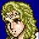

|
Character
ในภาคนี้ จะมีตัวละครในกลุ่มได้สูงสุดมากถึง 5 คนในคราวเดียว
และมีตัวละครเสริมอีกหลายตัว แต่ก็มีตัวละครหลักอยู่เพียง 5 คน คือ
Cecil Harvey
Sex : Male
Age : 20
Job : DKnight (Dark Knight)
Skill : Dark (ยิงพลังคลื่นออกไปโจมตีศัตรูทุกตัว แต่จะเสีย HP ประมาณ 8-9%)
(ในภาค Eng จะไม่มี Skill Dark)
Weapon : Dark Sword
Best Weapon : Black Atk 31
Job : Paladin
Skill : Cover (Off), White
เมื่อใช้ Cover จะเป็นการปกป้องตัวละครที่เลือก 1 ตัว เมื่อเลือก Off จะเป็นการยกเลิก
Cecil สามารถใช้เวทย์มนต์ขาว (White) ได้บางเวทย์
Weapon : Sword
Best Weapon : Crystal Atk 200 (+1 def)
Cecil เป็นตัวละครหลัก ซึ่งจะเป็นตัวเดินเรื่องตั้งแต่ต้นจนจบ
เมื่อเขาเปลี่ยนอาชีพเป็น Paladin แล้ว จะมีพลังโจมตีและป้องกันที่สูงมาก
นอกจากนั้นยังสามารถช่วยเหลือสมาชิกในกลุ่มได้มากขึ้นอีกด้วย
Kain Highwind
Sex : Male
Age : 21
Job: Dragoon
Skill : Jump
Weapon : Spears
Best Weapon : White Atk 109 (Use for Holy)
Kain เป็นตัวละครที่มีพลังโจมตีที่สูงพอสมควร
อีกทั้งเมื่อ HP ของเขาเหลือน้อย ก็สามารถใช้ Jump เพื่อหลีกเลี่ยงความเสียหายได้
Rosa Farrel

Sex : Female
Age : 19
Job: Wh.Wiz (White Wizard)
Skill : Pray, White, Aim
Pray เป็นการเพิ่ม HP ให้กับสมาชิกในกลุ่มทุกคนนิดหน่อย (ในภาค Eng จะไม่มี
Skill Pray)
Aim เป็นการใช้ธนูโจมตีศัตรู ซึ่งจะมีความแม่นยำที่สูง
Weapon : Staves
Best Weapon : Silence Atk 52 (Use for Mute)
Rosa เป็นตัวละครที่คอยเติม HP ให้สมาชิกในกลุ่ม มีความสำคัญเป็นอย่างมาก
Rydia
Sex : Female
Age : 7
Job: Caller
Skill : White, Black, Call (เมื่อ Rydia โตขึ้น Skill White จะไม่สามารถใช้
Skill White ได้)
Weapon : Whips
Best Weapon : Dragon Atk 56 (Paralyzes, +3 def)
เมื่อ Rydia โตขึ้น เธอสามารถใช้เวทย์มนต์โจมตีได้อย่างรุนแรงมากยิ่งขึ้น
โดยเฉพาะอย่างยิ่งสัตว์อสูรมีพลังโจมตีที่สูงมาก
Edge
Sex : Male
Age : 26
Job: Ninja
Skill : Dart, Sneak, Ninja
Dart ใช้สำหรับขว้างอาวุธต่างๆ โจมตีใส่ศัตรู
Sneak ใช้สำหรับขโมย item จากศัตรู (ขโมยได้เรื่อยๆ)
Ninja ใช้เวทย์มนต์ของนินจา ซึ่งมีอยู่ 6 ชนิด
Weapon : Blades
Best Weapon : Masamune Atk 65, Murasame Atk 56 (+2 def)
แม้ Edge จะมีพลังโจมตีที่ไม่สูงมาก แต่เขาสามารถขว้างอาวุธโจมตีใส่ศัตรูได้
ตัวละครเสริม
Tellah
Sex : Male
Age : 60
Job: Sage
Skill : White, Black, Recall (ใช้เวทย์มนต์แบบสุ่ม) (ในภาค Eng จะไม่มี
Skill Recall)
Weapon : Staves
Best Weapon : -
Tellah จะเข้ามารวมกลุ่ม 2 ครั้ง และในครั้งหลังนั้น
เขาจะจดจำเวทย์มนต์ต่างๆ ได้ทั้งหมด ทำให้สามารถใช้เวทย์ที่รุนแรงได้
แต่เขามี MP ที่จำกัดเพียง 90 เท่านั้น ไม่ว่าจะมี Level มากเพียงใด
Edward
Sex : Male
Age : 24
Job: Bard
Skill : Sing, Hide (Show), Heal (ในภาค Eng จะไม่มี Skill Heal)
Sing ทำให้ศัตรูตกอยู่ในสภาวะ CHARM, SLEEP, MUTE, CURSE อย่างใดอย่างหนึ่งแบบสุ่ม
Hide หลบออกไปนอกฉากต่อสู้ ทำให้ไม่โดนศัตรูโจมตี (เมื่อ HP เหลือน้อยจะ
Hide แบบสุ่ม)
และเมื่อต้องการกลับเข้าในฉากต่อสู้ก็จะใช้คำสั่ง Show
Heal ใช้ Potion กับสมาชิกในกลุ่มทุกคน
Weapon : Harps
Best Weapon : Charm Atk 18
Edward ดูไปแล้วจะไม่ค่อยมีประโยชน์กับกลุ่มมากนัก แต่เขาก็เป็นตัวละครเดินเรื่องตัวหนึ่ง
Yang
Sex : Male
Age : 35
Job: Karate
Skill : Kick, Power, Bear (ในภาค Eng จะไม่มี Skill Power และ Bear)
Kick โจมตีศัตรูทุกตัว แต่มีพลังโจมตีน้อย
Power ใช้เพิ่มพลังโจมตี
Bear ใช้เพิ่มพลังป้องกัน
Weapon : Claws
Best Weapon : -
Yang เป็นตัวละครที่มีพลังโจมตีสูงพอสมควร เขาจะมีบทบาทมากในช่วงกลางเนื้อเรื่อง
Palom
Sex : Male
Age : 5
Job: Bl.Wiz (Black Wizard)
Skill : Black, Twin, Bluff (ในภาค Eng จะไม่มี Skill Bluff)
Twin จะเป็นการใช้เวทย์มนต์คู่กันกับ Porom ซึ่งจะมีพลังโจมตีที่สูงพอสมควร
(ทั้งคู่ต้องมีชีวิต)
Bluff ใช้เพิ่มความสามารถทางด้านเวทย์มนต์
Weapon : Rods
Best Weapon : -
Palom จะได้มาพร้อมกับ Porom ทั้งคู่มีพลังเวทย์มนต์พอสมควร แต่ไม่เก่งมากนัก
Porom
Sex : Female
Age : 5
Job: Wh.Wiz (White Wizard)
Skill : White, Twin, Cry (ในภาค Eng จะไม่มี Skill Cry)
Twin จะเป็นการใช้เวทย์มนต์คู่กันกับ Palom ซึ่งจะมีพลังโจมตีที่สูงพอสมควร
(ทั้งคู่ต้องมีชีวิต)
Cry ทำให้สามารถหนีออกจากการต่อสู้ได้ง่ายขึ้น
Weapon : Staves
Best Weapon : -
Porom จะได้มาพร้อมกับ Palom ทั้งคู่มีพลังเวทย์มนต์พอสมควร แต่ไม่เก่งมากนัก
Cid
Sex : Male
Age : 54
Job: Chief
Skill : Peep ใช้ตรวจสอบ HP, MP และจุดอ่อนของศัตรู
Weapon : Hammers
Best Weapon : Earth Atk 67
Cid ไม่ค่อยมีประโยชน์กับกลุ่มมากนัก แต่เขาก็เป็นตัวละครเดินเรื่องตัวหนึ่ง
Fusoya
Sex : Male
Age : unknow
Job: Lunar
Skill : White, Black, Regen (ในภาค Eng จะไม่มี Skill Regen)
Regen ใช้เพิ่ม HP ให้กับทุกคนในกลุ่มทีละนิดหลายครั้ง
Weapon : Rods
Best Weapon : -
Fusoya เป็นตัวละครที่เก่งด้านเวทย์มนต์มาก แต่เขาค่อนข้างอ่อนแอ และตายง่าย
|